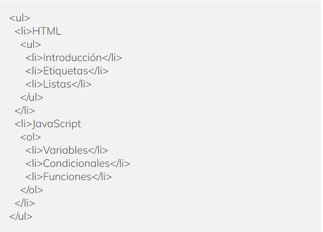

El anidamiento de listas en HTML es uno de esos conceptos que, una vez lo dominas, puede agregar una nueva dimensión a tu desarrollo web. No se trata solo de ordenar elementos de manera jerárquica, sino también de aprovechar la estructura que proporciona HTML para crear páginas más organizadas y legibles.
En esencia, el anidamiento de listas en HTML se refiere a la práctica de poner una lista dentro de otra lista. Puede ser una lista ordenada dentro de otra lista ordenada, una lista no ordenada dentro de una lista no ordenada, o incluso una lista no ordenada dentro de una lista ordenada y viceversa. El resultado es una estructura de información de múltiples niveles que es especialmente útil para representar conceptos y datos que naturalmente se agrupan en categorías y subcategorías.
Para empezar, tenemos que saber qué es el anidamiento de listas en HTML . En un lenguaje sencillo, anidar listas implica colocar una lista dentro de otra lista. Puede ser tanto listas ordenadas como no ordenadas. Y sí, se vuelve tan interesante como suena.
Ya sea que estés construyendo un menú de navegación con varios niveles de submenús, organizando el contenido de una página de manera jerárquica o simplemente buscando una manera efectiva de presentar una serie de puntos relacionados en tu página, el anidamiento de listas en HTML es una habilidad fundamental para cualquier desarrollador web. Aquí te mostramos un ejemplo de lista anidada para que tengas una mejor perspectiva visual.
Un ejemplo sencillo podría ser un menú de una página web con submenús. Podríamos tener un temario de HTML y JavaScript con sus respectivos subtemas, como puedes ver a continuación:
Te preguntarás por qué debería interesarte el anidamiento de listas en HTML. Aquí te damos 6 razones por las que las listas anidadas en HTML son tu próximo mejor amigo en el mundo del desarrollo web.
El anidamiento de listas nos permite dar estilo y organizar la información de manera jerárquica y sistemática. Esto ayuda a presentar los datos de manera más eficiente y fácil de entender para el usuario. Digamos que estás creando un sitio web para una tienda de electrónica y deseas proporcionar una lista detallada de los productos que se venden. Para hacerlo de la manera más eficiente y fácil de entender para el usuario, puedes hacer uso del anidamiento de listas en HTML.
Como te lo mencionamos antes, las listas anidadas son extremadamente versátiles. Puedes combinar listas ordenadas y no ordenadas, dependiendo de tus necesidades, haciendo que tu sitio web sea aún más dinámico y atractivo.
Un código limpio y bien estructurado es beneficioso para el SEO y las listas anidadas son una excelente manera de lograrlo. Mejora la legibilidad y le permite a los motores de búsqueda entender mejor tu contenido.
Una ventaja muy importante es que las listas anidadas facilitan la navegación de los usuarios en tu sitio web, especialmente cuando se usan para crear menús desplegables y submenús.
Las listas anidadas ayudan a mejorar la accesibilidad de tu sitio web. Los lectores de pantalla utilizan estas listas para dar contexto y facilitar la navegación para las personas con discapacidades visuales.
Finalmente, puedes dar estilo a tus listas anidadas utilizando hojas de estilo (CSS). Esto te permite personalizar la apariencia de tus listas y hacer que tu sitio web destaque. Aunque debes tener cuidado con la ubicación de tus listas anidadas. Asegúrate de que estén dentro del elemento que les corresponde para mantener una estructura correcta.
Si has llegado hasta aquí, ya conoces las ventajas de anidar listas en HTML y estás listo para adentrarte más en este apasionante mundo. Pero ¿sabes cuál sería el siguiente paso? ¡Unirte al Desarrollo Web Full Stack Bootcamp de KeepCoding! Con esta formación intensiva podrás entrar en el sector IT en pocos meses, una industria en constante crecimiento que ofrece altos salarios y una estabilidad laboral que pocos sectores pueden igualar. ¡Accede ahora y prepárate para cambiar tu futuro!